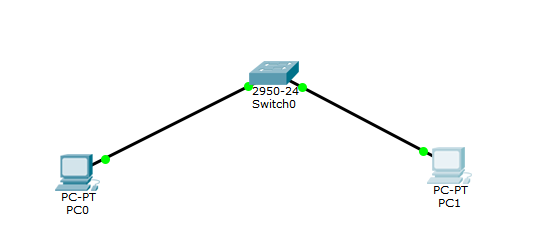
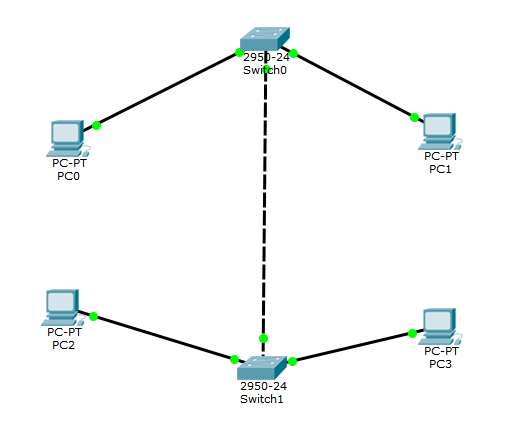
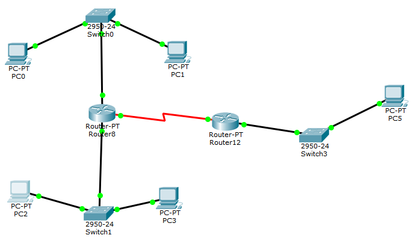

Лабораторная работа №1 "Экосистема разработки программ с открытым кодом"
Требования:Создание персональной страницы-отчета на github и работа с git
Выполнено:1. Создана персональная страница
2. Создан локальный клон общего репозитория с github
3. На персональную страницу добавлены js и css
Пример JS$(function(){
$('.view-source .hide').hide();
$a = $('.view-source a');
$a.on('click', function(event) {
event.preventDefault();
$a.not(this).next().slideUp(500);
$(this).next().slideToggle(500);
});
});
Пример CSS
body,
.cta-style-3 h4,
.section-heading.startup-heading {
font-family: 'Merriweather', serif;
}
.hide {
font-size: 14;
}
Лабораторная работа №2 "Разработка простого веб-приложения"
Требования:Проектирование и разработка индивидуального или коллективного веб-приложения с использованием html,css,js + json,xml
Выполнено:Ссылка на js-код
Лабораторная работа №3 "Настройка локальной сети передачи данных"
Требования:Настройка коммутаторов и маршрутизаторов
Задание (раскрыть)
Выполнено:
1. Разместить на рабочем поле коммутатор и два компьютера и соединить их
2. Подключить консольный кабель для настройки оборудования
3. Настроить адресацию на добавленных компьютерах согласно таблице ниже без шлюза по умолчанию
4. Выполнить проверку работоспособности сети
5. Добавить на рабочее поле еще один коммутатор с двумя компьютерами и настроить адресацию из другой подсети
6. Соединить коммутаторы между собой и проверить работоспособность сети
7. В случае неработоспособности сети объяснить причины
8. Добавить маршрутизатор на рабочее поле
9. Настроить интерфейсы маршрутизатора для существующих подсетей
10. Проверить работоспособность сети
11. В случае неработоспособности сети объяснить причины
12. Указать шлюз по умолчанию и отправить сообщение
13. Добавить на рабочее поле еще один маршрутизатор
14. Подключить к нему коммутатор и компьютер
15. Настроить сетевые настройки согласно таблице ниже
16. Соединить между маршрутизаторы и настроить между ними сеть с префиксом /30
17. Проверить работоспособность сети, отправив сообщение сети A в сеть С и из сети В в сеть С
18. В случае неработоспособности сети объяснить причины
19. Настроить статическую маршрутизацию между сетями
20. Настроить на сетевых устройствах пароли для привилегированного режима
21. Настроить пароли на сетевых устройствах пароли на подключение через консоль и telnet
22. Установить баннер на сетевое оборудование
23. Проверить работу удаленного подключения
2. Подключить консольный кабель для настройки оборудования
3. Настроить адресацию на добавленных компьютерах согласно таблице ниже без шлюза по умолчанию
4. Выполнить проверку работоспособности сети
5. Добавить на рабочее поле еще один коммутатор с двумя компьютерами и настроить адресацию из другой подсети
6. Соединить коммутаторы между собой и проверить работоспособность сети
7. В случае неработоспособности сети объяснить причины
8. Добавить маршрутизатор на рабочее поле
9. Настроить интерфейсы маршрутизатора для существующих подсетей
10. Проверить работоспособность сети
11. В случае неработоспособности сети объяснить причины
12. Указать шлюз по умолчанию и отправить сообщение
13. Добавить на рабочее поле еще один маршрутизатор
14. Подключить к нему коммутатор и компьютер
15. Настроить сетевые настройки согласно таблице ниже
16. Соединить между маршрутизаторы и настроить между ними сеть с префиксом /30
17. Проверить работоспособность сети, отправив сообщение сети A в сеть С и из сети В в сеть С
18. В случае неработоспособности сети объяснить причины
19. Настроить статическую маршрутизацию между сетями
20. Настроить на сетевых устройствах пароли для привилегированного режима
21. Настроить пароли на сетевых устройствах пароли на подключение через консоль и telnet
22. Установить баннер на сетевое оборудование
23. Проверить работу удаленного подключения
1. На рабочем поле размещены и соединены коммутатор и два компьютера, настроена адресация на добавленных компьюетрах и выполнена проверка работоспособности сети.

2. Добавлены еще коммутатор с двумя компьютерами, соединены две подсети и настроена адресация.

3. Добавлен и соединен маршрутизатор, проверена работоспособность сети.

4. Добавлена и подключена третья подсеть с компьютером, коммутатором и маршрутизатором. Проверена работоспособность всей сети.

Подготовка к экзамену
Требования:Самооценка прохождения теста по инновациям, формулировка одного вопроса по теме "Интернет-технологии" в одной из форм, встречающихся в тесте (выбор одного, выбор многих, упорядочивание, соответствие)